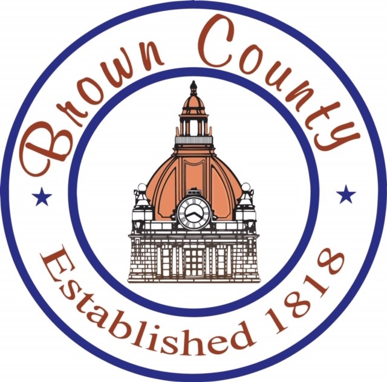

Celebrating Success: Client Testimonial from Hope Services
At Joxel, we pride ourselves on our commitment to excellence and client satisfaction. It is with great pleasure that we share a heartfelt testimonial…
Read MoreThe Joxel Group, LLC is a business consulting and development firm with expertise in the health care and pension industries. Collectively, Joxel has over 20 years of experience that supports our firms commitment to innovate, improve and deliver high quality results to our clients. Our company was founded in 2006 by Sushil and Nan Pillai with the intent to create a business consulting and development firm that was industry-specific and focused on enhancing the client’s goals and increasing their business...
Trusted by leading organizations

Joxel's Healthcare consultants have expertise in IT and healthcare. Our experts are often brought into organizations to examine and address
As the healthcare industry grows increasingly complex, organizations are seeking outsourced solutions to help balance their strategic priorities and day-to-day
At Joxel, we are continuously looking for solutions to meet our clients' needs and provide quality solutions. Joxel can provide
Working directly with Mica Yurk, Joxel's Vice President of Consulting Services, has been an exceptional experience for our organization. Her extensive knowledge, unique expertise and ability to provide a comprehensive background on various aspects of our project have been invaluable. Mica has successfully delivered strategic and tactical guidance, significantly enhancing our operations. Joxel's contributions have improved our systems and enhanced our ability to fulfill our...
Our partnership with The Joxel Group has been exceptional. Beyond providing technical assistance whenever needed, they excel in creatively problem-solving myEvolv issues with our team. What stands out is their dedication to empowering our team. They not only fix problems but also teach and mentor our administrators, enhancing our internal capacity for handling similar challenges in the future. We appreciate their dedication to our success.
"The Joxel Team has been instrumental in solving complex system and business problems with our Electronic Health Record system. They bring a high level of technical and business expertise to the table which helps resolve complex challenges and meet tight deadlines. Their biggest asset is the ability to be nimble and execute to a high-quality standard."
The Joxel Group has proven themselves as a valuable IT consulting partner to Waukesha County Government and a key partner of the Health and Human Services Department. We recognize that the understanding of the customer needs is integral to our continued success, and The Joxel Group has done a great job of going the extra mile to thoroughly understand our culture, business requirements and the...
The Joxel Group is a trusted advisor and strategic partner to LSS. Our partnership started with Joxel conducting an IT assessment and evolved into helping us implement key assessment recommendations relating to IT governance, standardization of processes, and enhanced utilization of our Electronic Health Record. Joxel knows what it takes to effectively implement change through focusing on people, processes, and systems. They bring expertise, innovation,...
Sauk County DHS has utilized Joxel’s expertise in a variety of ways. From providing a systems health check, to implementing the treatment plan to training of staff and writing reports. Joxel listens to the needs of the agency and staff and delivers an end product that reflects that. Joxel is easy to work with and is available even after the project is done. Our agency...
Our people are the heart of everything we do. We are proud to be recognized as a Best Places to Work award recipient — a reflection of the culture, care and commitment our team brings to every client engagement.
At Joxel, we pride ourselves on our commitment to excellence and client satisfaction. It is with great pleasure that we share a heartfelt testimonial…
Read MoreKue Yang is a Project Coordinator, and the newest member of our Joxel Family. Kue joins us with a wealth of experience and expertise that will undoub…
Read MoreHalloween, Thanksgiving, Christmas, and New Year’s Eve! Fantastic food, friendly fellowship, all objectively ostentatious and adjectively magnanimous…
Read MoreJoxel offers experienced, expert assistance throughout every phase of your EHR lifecycle. Let’s start the conversation today.